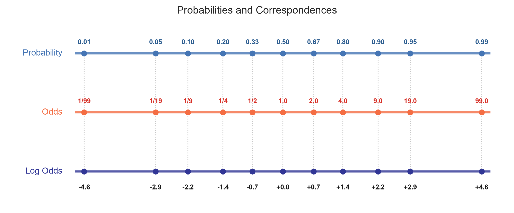
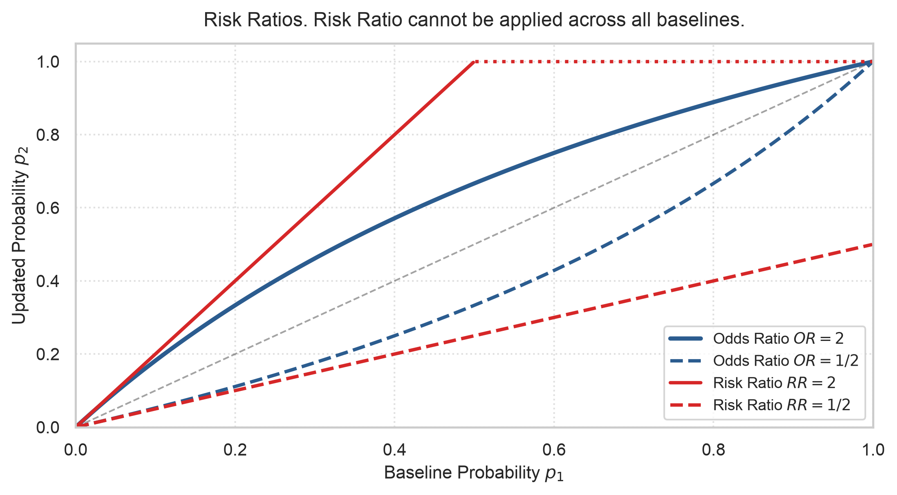

Probabilities & Co
1. Probabilities & Transformations
Often we want to compare (or model/predict) probabilities \(p_1 = p(x_1), p_2 = p(x_2)\) after some intervention or medical treatment, i.e. a change of variables denoted by \(x\).
Because \(p\) is bounded in \([0, 1]\) it is not directly suitable for linear modeling and we have introduced the odds and log-odds to find a more suitable representation for probabilities. There are also other advantages of these transformations:
| Scale | Formula | Domain | Neutral Point | Negation \(p_{\text{fail}} = P(Y=0)\) |
|---|---|---|---|---|
| Probability | \(p = P(Y=1)\) | \([0, 1]\) | \(0.5\) | \(p_{\text{fail}} = 1 - p\) (reflection around \(0.5\)) |
| Odds | \(\text{OR} = \frac{p}{1-p}\) | \([0, \infty)\) | \(1.0\) | \(\text{OR}_{\text{fail}} = \frac{1}{\text{OR}}\) (reciprocal around \(1.0\)) |
| Log-Odds (Logit) | \(z = \ln\left(\text{OR}\right)\) | \((-\infty, \infty)\) | \(0.0\) | \(z_{\text{fail}} = -z\) (additive sign flip around \(0.0\)) |
Plot: Probabilities and Correspondences
fig, ax = plt.subplots(figsize=(8.5, 3.6))
y_prob, y_odds, y_logit = 2.0, 1.0, 0.0
p_landmarks = np.array([0.01, 0.05, 0.10, 0.20, 0.33, 0.50, 0.67, 0.80, 0.90, 0.95, 0.99])
odds_landmarks = p_landmarks / (1.0 - p_landmarks)
logit_landmarks = np.log(odds_landmarks)
# Horizontal lines for the three scales
ax.hlines(y_prob, -4.8, 4.8, color='#4575b4', lw=2.5, alpha=0.8)
ax.hlines(y_odds, -4.8, 4.8, color='#f46d43', lw=2.5, alpha=0.8)
ax.hlines(y_logit, -4.8, 4.8, color='#313695', lw=2.5, alpha=0.8)
for p, o, lo in zip(p_landmarks, odds_landmarks, logit_landmarks):
ax.plot([lo, lo], [y_logit, y_prob], color='gray', linestyle=':', lw=1, alpha=0.45, zorder=1)
ax.scatter(lo, y_prob, color='#4575b4', s=35, zorder=3)
ax.scatter(lo, y_odds, color='#f46d43', s=35, zorder=3)
ax.scatter(lo, y_logit, color='#313695', s=35, zorder=3)
# Text labels
ax.text(lo, y_prob + 0.13, f"{p:.2f}", ha='center', va='bottom', fontsize=8, fontweight='bold', color='#2b5c8f')
o_str = f"{o:.1f}" if o >= 1 else f"1/{int(round(1/o))}"
ax.text(lo, y_odds + 0.13, o_str, ha='center', va='bottom', fontsize=8, fontweight='bold', color='#d73027')
ax.text(lo, y_logit - 0.22, f"{lo:+.1f}", ha='center', va='top', fontsize=8, fontweight='bold', color='#1a1a1a')
# line annotations
ax.text(-5.1, y_prob, "Probability", ha='right', va='center', fontsize=10, color='#4575b4')
ax.text(-5.1, y_odds, "Odds", ha='right', va='center', fontsize=10, color='#f46d43')
ax.text(-5.1, y_logit, "Log Odds", ha='right', va='center', fontsize=10, color='#313695')
ax.set_ylim(-0.6, 2.5)
ax.set_xlim(-6.4, 5.2)
ax.axis('off')
ax.set_title("Probabilities and Correspondences", fontsize=12, pad=12)
plt.tight_layout()
plt.show()
2. Odd Risks
Occasionally people use the “Risk Ratio” (RR) to compare probabilities:
\[ \text{RR} = \frac{p_2}{p_1} \]
This can be problematic as shown below:
| \(p_1\) | \(p_2\) | \(\text{RR} = \frac{p_2}{p_1}\) | \(\text{OR} = \frac{p_2 / (1 - p_2)}{p_1 / (1 - p_1)}\) | \(\ln(\text{OR})\) |
|---|---|---|---|---|
| \(0.2\) | \(0.5\) | \(2.50\) | \(4.0\) | \(\ln(4) \approx +1.39\) |
| \(0.5\) | \(0.2\) | \(0.40\) | \(1/4\) | \(\ln(1/4) \approx -1.39\) |
| \(0.5\) | \(0.8\) | \(1.60\) | \(4.0\) | \(\ln(4) \approx +1.39\) |
A constant Risk Ratio assumes a simple multiplicative scaling of the baseline probability:
\[p_2 = RR \cdot p_1\]
This linear scaling cannot hold across all baselines: for example, doubling risk (\(RR = 2.0\)) exceeds \(1.0\) whenever \(p_1 > 0.5\). In contrast, a constant Odds Ratio yields a valid, smooth probability across all baseline values \(p_1 \in (0, 1)\):
\[p_2 = \frac{OR \cdot p_1}{(1 - p_1) + OR \cdot p_1}\]
Plot: Risk Ratio vs. Odds Ratio Across Baselines
p1 = np.linspace(0.001, 0.999, 400)
# Multiplicative factor of 2 (doubling)
rr_2 = 2.0 * p1
or_2 = (2.0 * p1) / ((1.0 - p1) + 2.0 * p1)
# Halving factor of 0.5
rr_05 = 0.5 * p1
or_05 = (0.5 * p1) / ((1.0 - p1) + 0.5 * p1)
fig, ax = plt.subplots(figsize=(7.5, 4.2))
# Diagonal reference (no legend)
ax.plot(p1, p1, 'k--', lw=1, alpha=0.4)
# Odds Ratios (Blue: solid for 2, dashed for 1/2)
ax.plot(p1, or_2, color='#2b5c8f', lw=2.5, linestyle='-', label=r'Odds Ratio $OR = 2$')
ax.plot(p1, or_05, color='#2b5c8f', lw=2.0, linestyle='--', label=r'Odds Ratio $OR = 1/2$')
# Risk Ratios (Red: solid for 2, dashed for 1/2)
ax.plot(p1[p1 <= 0.5], rr_2[p1 <= 0.5], color='#d62728', lw=2.0, linestyle='-', label=r'Risk Ratio $RR = 2$')
ax.plot(p1[p1 > 0.5], np.ones_like(p1[p1 > 0.5]), color='#d62728', lw=2.0, linestyle=':')
ax.plot(p1, rr_05, color='#d62728', lw=2.0, linestyle='--', label=r'Risk Ratio $RR = 1/2$')
ax.set_title("Risk Ratios. Risk Ratio cannot be applied across all baselines.", fontsize=11.5, pad=10)
ax.set_xlabel("Baseline Probability $p_1$", fontsize=10.5)
ax.set_ylabel("Updated Probability $p_2$", fontsize=10.5)
ax.set_xlim(0, 1)
ax.set_ylim(0, 1.05)
ax.legend(loc='lower right', frameon=True, fontsize=9)
ax.grid(True, linestyle=':', alpha=0.6)
plt.tight_layout()
plt.show()
Notice that as \(p_1 \to 0\) (near the origin), the curves for \(RR = 2.0\) and \(OR = 2.0\) converge. When an event is rare, \(1 - p \approx 1\), which implies: \[OR = \frac{p_2 / (1 - p_2)}{p_1 / (1 - p_1)} \approx \frac{p_2 / 1}{p_1 / 1} = RR\] In low-incidence regimes, the Odds Ratio closely approximates the Relative Risk.